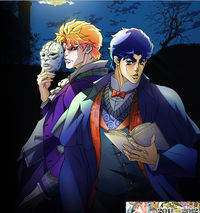
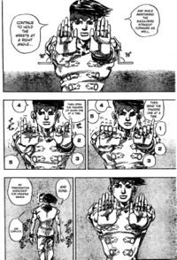
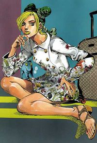
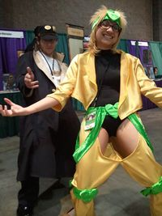
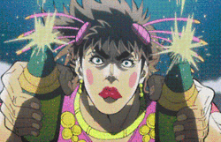
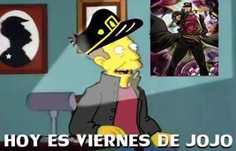

Jojo's Bizarre Adventure
 De: La Frikipedia, la enciclopedia extremadamente seria.
De: La Frikipedia, la enciclopedia extremadamente seria.
| De la serie anime para todos:
|
| Jojo's Bizarre Adventure
|
| 
|
| Nunca antes acabar con vampiros fue tan masculino.
|
|
| Género:
|
Shonen
|
| Episodios:
|
26 (1er temporada), 48 (2da temporada).
|
| Autor del manga:
|
Hirohiko Araki, maestro de las poses épicamente fabulosas.
|
| Publicación:
|
1987 hasta hoy.
|
| Publicado en:
|
antes en la Shonen Jump, ahora en Ultra Jump ,
|
| Director del anime:
|
Naokatsu Tsuda
|
| Transmitido en:
|
Mc Anime, tu casa y la de mi primo.
|
| Ovas:
|
13
|
| Películas:
|
1
|
| Notas
|
Pensabas que ibas a encontrar algo interesante por aquí... ¡pero era yo, Dio!
|
«¡DIOOOOOOOOOOO!»
~ Jonathan Joestar en media pelea contra Dio.
«¡JOJOOOOOOOOO!»
~ Dio en media pelea contra Jojo.
«¡LA PUTA QUE TE PARIÓ, HIROHIKO ARAKI!»
~ Un fan al ver el final de Stone Ocean.
«No te preocupes, Smokey. Tengo una idea para salir de esta. ¿Ves las piernas de Straits? Tardará en regenerarse ¿no? Eso nos dará tiempo para usar nuestras piernas... ... ... ... ... ... ... ...¡CORRE SMOKEY!»
~ Joseph Joestar utilizando la gran técnica secreta.
«Puedo saber tus mentiras»
~ Bruno Bucciarati antes de dejarle la cara baboseada a alguien.
«PIZZA MOZARELLA, PIZZA MOZARELLA, RELLA RELLA RELLA RELLA!»
~ Gyro Zepelli cantando la canción del queso.
«¡*Inserte situación aquí* ha ocurrido! ¡Debe ser un Stand!»
~ Cualquiera de los protas de Diamond is Unbreakable cada vez que ocurre algo.
«¡WRYYYYYYYYYYYYYYYY!»
~ Dio de nuevo.
Jojo's Bizarre Adventure (ジョジョの奇妙な冒険, JoJo no Kimyō na Bōken) normalmente abreviado como Jojo, es un Hirohiko Araki allá por el año 1987. Narra las fantásticas historias de diferentes arcos argumentales en los que valerosos héroes deben enfrentarse a villanos vestidos con toda clase de ropajes ajustados y técnicas ancestrales de super duper artes marciales y poderes de toda índole que intentan dominar el mundo con sus increíbles habilidades. Venga, sabemos que es puro cliché shonen, pero para eso tenemos cantidades de tipos exhibicionistas, Stands y Dio y su ZA WARUDO.
Historia
Ya que la historia es más inacabable que Naruto o cualquier serie shonen en general, Jojo tiene un huevo de temporadas y personajes, tanto que merece su propio artículo.
Vease: Anexo:Temporadas de Jojo's Bizarre Adventure
- Phantom Blood: También conocido como "Crepúsculo Abierto: La novela del vampiro trolazo y el cabeza hueca de Jonathan".
- Battle Tendency: También conocido como "Indiana Jones contra los nazis contra los tios con taparrabo".
- Stardust Crusaders: Tambien conocida como "La vuelta al mundo en 80 dias por el culo de Dio".
- Diamond is Unbreakable: Tambien conocida como "Scooby Doo pero con superpoderes y sin perros".
- Vento Aureo: Tambien conocido como "Katekyō Hitman Reborn! con más trolazos".
- Stone Ocean: Tambien conocida como "Prison Break contra la Inquisición de Dio".
- Steel Ball Run: Tambien conocido como "George Wachinton".
- Jojolion: Tambien conocido como "El marinerito de los cuatro cojones".
Cosas que siempre verás en Jojo
- Un Jojo: Tiene que ser el prota de su temporada de turno y tiene que tener este susodicho apodo dependiendo de una combinación del nombre completo (Jonathan Joestar, Jotaro Kujo, Giorno Giovanna...). Puede ser uno que de todo da el coñazo o un tremendo marica.
- El amigo de relleno: Amigo sin poderes normalfag. Si tiene poderes, no ayuda. Normalmente hace de comentarista.
- Un Zepelli: Trolazo italiano que siempre se lleva muy bien con el Jojo de turno, tiene poderes bastante maricones (o usa líquidos pegajosos o pelotas...no, no eso malpensados) y siempre muere al final de temporada.
- El amigo emo: Es el que se lleva de la hostia con el Jojo de turno y se dedica a putear a medio mundo, pero sí sirve de algo.
- El subnormal: El nombre lo dice todo. Cuando aparece cree que es el puto amo, tiene un poder monse o si es groso no lo usa bien.
- El putazo: Es el que suda feromonas a nivel sobrehumano, todo el mundo le sigue a donde vaya. Pueden ser desde vampiros trolazos envidiosos, musculosos amargados, enanos, cabezas de rosquilla o ninfómanas.
- La hembra: El interés amoroso del Jojo de turno, siempre es una pija retrasada. Si es hombre, espérense un trolazo.
- El villano fabuloso: A veces es el putazo de turno. Busca Dominar el mundo o en su defecto ser jodidamente invencible.
- Poses fabulosas: los personajes hacen poses espectaculares como si fuese una necesidad biológica, incluso si un amigo acaba de morirse hace tan solo 2 segundos.
- Ropa de marca: El 80% de personajes usa ropas fabulosas de marca para acentuar
la mariconeria las poses (mientras que el restante 20% lleva uniformes o simplemente nada puesto). A veces hasta modelan ropas de Gucci o Prada.
- El niñato: A veces es el punto de partida para las cosas bizarras. Es acosado por yanderes o mangakas.
Mini Historias
Como buena serie más larga que Naruto y Dragon Ball juntos, Jojo también tiene sus mini-historias y omakes. Obvio que todo es relleno, pero he aquí algunos de ellos:
ropafilia es un delito en Morioh y está penado con multas de hasta 200 dólares morienses. Pero claro, en el Louvre eso sí es gratis.
 Rohan enseñando ejercicios de calentamiento para las manos, ya sea para dibujar
o hacerse pajas a mano cambiada.
- Ha hablado
el pinche Rohan Kishibe: El dibujante voyeur viola-enanos que sale en Diamond is Unbreakable se bishifica y da la vuelta al mundo buscando inspiración, sin necesidad de usar putas o drogas. Sin embargo, le pasan mas rarezas que Supernatural juntos.
- En el Confesional: El voyeur se va a el Exorcista, dándole el reto de que si atrapa una canchita voladora sin que se le caiga, lo dejará en paz. Obvio que al tercer intento el tipo se muere. Cuando Rohan le pregunta cómo carajos sigue vivo, se revela que el viejo pendejo se hizo cirugía con su mayordomo para que el muerto de hambre se confunda y lo mate. Y ahora los dos muertos juran vengarse del viejo, mientras Rohan comenta que volverá el próximo año
a verificar si es que Giorno le metió mano a Koichi en Vento Aureo a ver qué pasa.
- Poaching Seashore: Rohan y el cocinero Tonio (ese que puteó a Josuke por no lavarse las manos antes de comer) deben arriesgarse el pellejo para atrapar un puto pez bajo el mar. Tonio quiere conseguir un ingrediente del pez para salvar a su flaca, mientras que Rohan solo busca inspiración de nuevo.
- Rohan en el Louvre: Cuando Rohan era un adolescente frígido y cero calenturiento (ya que el enano aun no entraba en su vida) que recién empezaba a postear sus propios comics, conoce a una inquilina bastante atractiva quien le enseña el placer...no eso que están pensando, malpensados, si el pendejo es bastante gay, hablo del placer del arte en general. Este solo hace caso puesto que sus fans demandan que dibuje fanservice con hembras en sus comics (y él no quiere, porque es trolo) hasta que la tipa en cuestión le cuenta sobre un cuadro maldito en el Louvre, ya que lo hizo un pintor al que condenaron a muerte, hasta que se pelean y no vuelve a verla. Años después viaja al Louvre a buscar el pinche cuadro con un grupo, pero nomás llegar aparecen fantasmas que casi los matan, hasta que a Rohan lo salva el plot, digo, la tia esa que conocio hace años, que resulta ser un fantasma, pariente del mangaka degenerado y es la esposa del pintor del cuadro maldito. Al final Rohan salva su culo, pero sus compañeros se murieron y el cuadro desapareció.
- Rohan Kishibe va a Gucci: Rohan regresa a Italia, pero esta vez porque el bolso de su abuela marca Gucci se traga su dinero. Obvio que allí no le quieren hacer su reembolso y lo ponen de patitas en la calle, de modo que se va a chupar con una intérprete sexy que encontró por ahí. La muy puta lo emborracha hasta decir basta y le roba todo su dinero (se nota que no aprendieron con Vento Aureo) y lo deja en un callejón oscuro. El pobre voyeur encuentra un hotel donde un trolazo decide comprar su fabuloso paraguas (la puta no se lo robó) por exactamente la misma cantidad de plata que el bolso se tragó, de modo que Rohan descubre que el pinche bolso tenia un Stand y se lamenta por haberlo arreglado por imbecil.
- La Colina Mutsu-kabe: Rohan pide adelanto para que le paguen los de la Shonen Jump, porque el muy idiota se compró una montaña y se quedó más pobre que un pelagato, vendió sus muñecos de colección dignos de un otaku y demás. De modo que vive de colado en casa del enano Koichi, quedando este a merced del degenerado dibujante voyeur. Resulta que compró el cerro porque ahí hay un cadáver de un sujeto que sangra mas que una quinceañera en plena menstruación (la novia de este lo mató por error, lo escondió en el sótano y sangra litros por día). Al pasear por el cerro, el voyeur mata por accidente a una niñata que pasaba por ahi y tras aplicarle el Heaven's Door, descubre que es hija de la asesina y el cadáver. Si, ni el pobre Rohan se explica como logró salir embarazada de un muerto podrido, pero decide no meterse más. Y todos felices y contentos... menos Koichi
y su ojete.
 Jolyne tampoco desaprovecha para
ser puta mostrar ropa de marca
- Jolyne, Fly High with GUCCI: Jolyne anda por un aeropuerto, hasta que de sobredosis de drogas se alucina que ve un unicornio azul y que habla con Bucciarati y Abbachio, quienes ahora son agentes del FBI y andan vestidos con ropa casual y cero exhibicionista (cosa rara, teniendo en cuenta que los de Passione andan por ahi vestidos como putazos).
- Dead Man's Questions: Yoshikage Kira anda penando por ahí sin Stand, ya que lo botaron a patadas del Infierno.
- The Book: JoJo's Bizarre Adventure 4th Another Day: Un niñato huerfano consigue un Stand llamado The Book, y es un emo vengador obsesionado con matar a su viejo. Obvio que como esto ocurre en
Mierda Morioh, el mangaka depravado y su enano putillo deducen que "algo raro pasó de nuevo, debe ser un Stand" y van a investigar por ahi. Al final el emo se hace amigo de su media-hermana sin saber quien es y el emo se suicida despues de darse de hostias con Pompadour, digo Josuke.
- Jorge Joestar: La historia más drogadicta que escribió Araki. Trata de las aventuras de George Joestar II (padre del hinchapelotas Joseph) y sus encuentros
sexuales con Tsunade, perdon, Lisa Lisa. También cuenta que no precisamente Pucci la cagó al resetear el mundo, pues hay miles de mundos alternos como en Madoka Magica...
- El cadáver de Steel Ball Run no era de Jebús, sino del amargado Dio. Sabíamos que es groso y todo, pero...
- En las lineas de tiempo o Cars se queda volando en el espacio, o se vuelve bueno, o se consigue un Stand, o le roba a Kira su Killer Queen, o se une a Dio y juntos vuelven al mundo en algo trolo.
- Jotaro no mató a Dio. Sigue vivo y
culeando coleando y el de Stardust Crusaders es un impostor.
- A la ciudad de
Mierda Morioh le crecen patas y se choca con la isla de los trolos de Passione.
- En otras Narancia no tiene un avión de juguete como Stand sino un bote que tampoco da en el blanco llamado U Boat.
- Y tambien todos los Stand son diferentes excepto
Death Note Heaven's Door, Deus ex machina Gold Experience Requiem y Killer Queen.
- En otra linea de tiempo Erina fusionó la cabeza de Jonathan con el cuerpo de Dio y es el cadáver de Jebús en Steel Ball Run.
- Y Josuke es un marinerito gay con 4 cojones y Koichi es mujer (vease Jojolion).
- Rohan sigue siendo un mangaka amargado de mierda y es el único que no cambia con las lineas de tiempo.
- Giorno usó a su Deux ex machina que tiene por Stand para no ser reseteado en Stone Ocean.
- En otras líneas de tiempo es Giorno la otra personalidad de Diavolo y no Doppio.
- Y en la línea de tiempo del libro George y Lisa Lisa deben sobrevivir en el apocalipsis zombi de The Walking Dead. WHAT DA FAQ?
Cosas que harías si fueras un fan de Jojo
 Nuestros amigos haciendo... eh... bueno,
algo.
- Harías poses fabulosas por cada frase.
- Vestirías ropa
ridícula para ostentar tu fabulosidad y verte como payaso.
- Dirías frases megamolonas o en su defecto tan retardadas que matarías a alguien de la risa.
- Llevarías un pompadour. Cuando alguien te critique, le rompes las piernas.
- Irías a Texas para pedirle a un cowboy que te enseñe a disparar pelotas.
- Tratarías de predecir lo que alguien está por decir y tendrías éxito.
- Gastarías por mes o por semana, en la peluquería, la cantidad equivalente al sobresueldo de un dirigente político.
- Usarás "Awake" (el tema de los pillar men) como alarma para despertar cada mañana y hacer una pose fabulosa mientras un amigo tuyo dice "Awaken, my masters!".
- Te pondrás una mascarilla especial para aprender a controlar tu respiración y aprender a dominar el Hamon.
- Cuando el profesor esté por ver que te copias gritarás "ZA WARUDO!" en un intento por congelar el tiempo.
- Te tomarás toda una tarde para explicar qué es un "Stand" cuando los del seguro pregunten por el incendio de tu casa.
- Pasarás día y noche buscando el monte tibetano en el que se esconde el Clan Hamon.
- Conseguirás que te adopte una familia de la alta sociedad, pero como eres
un jodido imbécil bueno pa'ná' como Dio en su lugar tratarás de conspirar para fracasar y luego convertirte en vampiro para causar apocalipsis zombis.
- Insistirías que 16 x 55 = 28 y tratarias
de acuchillar mal a los que te llamen bruto por no saber la tabla del 2
- Cuando creas que estés jodido, sacarás una máscara de piedra, te la pondrás y saltarás por la ventana, caerás 10 pisos abajo e impactarás contra un colchón. Luego te quitarás la máscara mientras todos te estén mirando y gritarás "WRYYYYYYYYYYYYYYYYY!"
- Cuando encuentres un antiguo frasco duro de hace setepecientos años que nadie en el mundo ha conseguido abrir jamás, lo tomarás con tus manos, luego dirás "¡Hamon!" y lo abrirás.
¿Sabías que...
 "MANOS ARRIBA Y PANTALONES ABAJO!" - Todos aquí tienen nombres de autos o de bandas o canciones rolingas?
- Los Zepelli siempre se mueren?
- Tras acabar Battle Tendency, Joseph se dedicó a prostituirse como la Tequila Girl?
- Cada vez que algo malo pasa debe ser un Stand?
- Los de Passione se forman
mega orgías bandas separadas entre ellos?
- Jotaro compite con Shizuo Heiwajima por el prota mas histérico?
- Caesar volvió a Joseph marica?
- Rohan ha hecho doujins en los que se tiraba a Koichi?
- ... y uno en el que mataba a Josuke?
- Light Yagami es un plagio de Yoshikage Kira?
- El ZA WARUDO ha sido plagiado en todo tipo de animes y videojuegos?
- Los otakus más conocen a Sakuya Izayoi que a Dio y eso que tienen las mismas técnicas (nah, de hecho Sakuya las plagió)?
- Jolyne es ninfomana?
 Skinner también es fabuloso.
- Según Jojo, es mas probable que te robe un italiano que un estadojuntinense?
- El Síndrome de Keitaro Urashima de Koichi solo funciona con nipones?
- Hot Pants no usa pantalones?
- Las CLAMP hicieron un doujin en el que Jotaro embaraza a Kakyoin?
- Dio se tiró a todo el reparto de Jojo?
- Que no, Giorno no tiene donuts en la cabeza?
- Todos son unos putos degenerados?
- Si te atreves a insultar el pompadour de Josuke, este vendrá por la noche a romperte las piernas?
- Diego levantaba la industria del café en un 95%?
- Y sus chistes de serpientes y pumas son una mierda?
- Narancia no es más bruto porque no se puede?
- Cuando un personaje no aparece cuando deberían pelear contra el final boss es malo, porque justo su poder era el que servía mas?
- Cualquiera se hace gay por Dio?
- Kakyoin tiene un fetiche por las MILFs y las cerezas?
- Que no, Buciaratti no es mujer?
- El Stand de Giorno en vez de llamarse Gold Experience Requiem debería llamarse Deus ExMachina?
- Touhou ha plagiado todos las técnicas más grosas de esta serie, tales como el ZA WARUDO, los trenes voladores, las bufandas latigo, los bordes que aparecen y desaparecen?
- Lisa Lisa es una vieja cincuentona, pero es una MILF y está para darle?
- WRYYYYYYYYYYYYYYYYYYYYYYYYYYYYYYYYY?
- Jotaro tenía tanta testosterona que contrajo cáncer?
- Y que todo este tiempo intentó hacerse gay pero no funcionó (y hasta tuvo una hija)?
- Araki le robó poses a los pintores y escultores de la antiguedad?
- Un Stand ganó las elecciones presidenciales pero nadie se dio cuenta porque está disfrazado?
- Los que te dicen marica por ver Jojo en realidad se excitan compulsivamente cada vez que sale Dio (o Jotaro)?
- Avdol nunca estuvo afectado por el magnetismo?
- Vestirse como los de Passione se está poniendo de moda pero hemos decidido no vestirnos a la moda?
- Los de Passione son hipsters?
- Jonathan Joestar y su padre eran aristócratas pero no eran malos como los aristócratas de la realidad?
- Puedes estar ahogándote y a Iggy no le va a importar?
- Tú podrías ser el Jojo de un universo alterno?
- Araki usó la máscara de piedra y por eso no le salen arrugas?
- Jorge Joestar tiene su nombre en español, pero su abuelo, su padre, su hijo y su nieta en inglés because fabulous?
- Mientras leías esto Josuke te robó la billetera?
- El tema de Jotaro en Stardust Crusaders es la música de mayor hombría de los últimos 7000 años?
Autor(es):
- SakuraMiya
- Marcosantinos
- SA Pereda
Frikipedia 2005-2016, Licencia
GFDL 1.2 - Extraído por FrikiLeaks